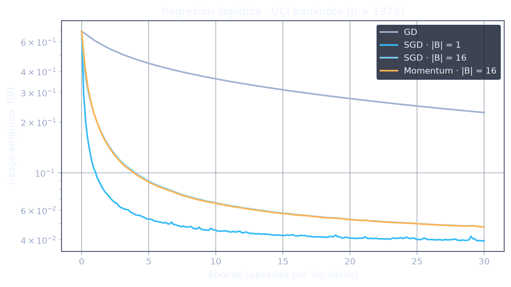

Descenso de gradiente estocástico y variantes
Todo modelo que “aprende” está minimizando una función.
El paisaje de pérdida.
Del polinomio de Taylor al método.
Todo depende de α.
El gradiente exacto recorre todos los datos en cada iteración.
Un gradiente muestreado sigue apuntando bien, en promedio.
Por época, SGD baja más rápido que GD.
Entre un dato y todos los datos, el mini-lote.
Un dato es barato pero ruidoso, los n datos exactos pero carísimos. El mini-lote es el punto medio: un subconjunto B de los n = 80 datos.
El promedio no cambia la esperanza: \(\mathbb{E}[\nabla f_B] = \nabla f\). El mismo argumento de insesgadez de SGD sobrevive al promedio.
La varianza del gradiente cae como \(1/\lvert B \rvert\): a mayor lote, menos temblor en la dirección.
El trabajo por iteración es \(\mathcal{O}(\lvert B \rvert\, d)\), y una época son \(n/\lvert B \rvert\) iteraciones.
Dos perillas: el lote y el momento de parar.
La bola pesada de Polyak.
GD no tiene memoria, usa solo el gradiente actual. En un valle angosto eso lo pone a cruzar de pared a pared en vez de avanzar. El remedio es recordar.
Los rebotes de pared a pared alternan de signo y se anulan al sumarse en la velocidad.
La componente que siempre apunta igual se compone hacia \(\alpha\, g/(1-\beta)\). Con β = 0.9 y el mismo α, hasta 10 veces el avance de GD.
Una evaluación de gradiente por iteración, igual que GD, y dos líneas más de código.
Rosenbrock: un valle que dobla.
La implementación, en NumPy puro.
def gd_step(theta, g, state, lr=0.01): theta = theta - lr * g return theta, state def momentum_step(theta, g, v, lr=0.01, beta=0.9): v = beta * v + g theta = theta - lr * v return theta, v
# SGD reutiliza gd_step; lo único que cambia # es el origen de g: un mini-lote, no los n datos. def minibatch_grad(self, theta, rng, batch): idx = rng.integers(0, self.n, size=batch) r = self._residuals(theta, idx) return np.array([r.mean(), (r * self.A[idx]).mean()])
Un problema real: billetes falsos.

UCI Banknote Authentication: 1372 billetes, 4 características de la imagen (wavelets), etiqueta genuino/falso.
Mismo presupuesto de épocas para todos. El eje x cuenta pasadas por los datos, no iteraciones: la comparación honesta.
SGD domina desde la primera época y el lote de 16 da una curva visiblemente más limpia. Con rasgos normalizados el tazón queda bien acondicionado, así que Momentum aporta poco aquí: su ventaja vive en los cañones.
Cuatro ideas para llevarse.
- El trato de SGD gana: cambiar precisión por costo en cada iteración permite dar miles de iteraciones más con el mismo presupuesto, y el estimador insesgado garantiza que en promedio se avanza.
- El lote es la perilla de la varianza: promediar |B| muestras corta el ruido como 1/|B| y conserva casi todo el ahorro. Se elige tan grande como la memoria lo permita.
- Detenerse temprano es regularización gratuita: el error que importa es el de validación, y su mínimo llega antes que el del entrenamiento.
- Momentum repara la geometría: una memoria corta de gradientes cancela el zigzag de los cañones. Es el corazón del optimizador por defecto en la práctica moderna.
Referencias
- H. Robbins y S. Monro, "A stochastic approximation method," Ann. Math. Statist., vol. 22, n.º 3, pp. 400-407, 1951.
- B. T. Polyak, "Some methods of speeding up the convergence of iteration methods," USSR Comput. Math. Math. Phys., vol. 4, n.º 5, pp. 1-17, 1964.
- L. Prechelt, "Early stopping, but when?" en Neural Networks: Tricks of the Trade, Berlín: Springer, 1998, pp. 55-69.
- S. Ruder, "An overview of gradient descent optimization algorithms," arXiv:1609.04747, 2016.
- L. Bottou, F. E. Curtis y J. Nocedal, "Optimization methods for large-scale machine learning," SIAM Review, vol. 60, n.º 2, pp. 223-311, 2018.
- V. Lohweg, "Banknote authentication," UCI Machine Learning Repository, 2013.